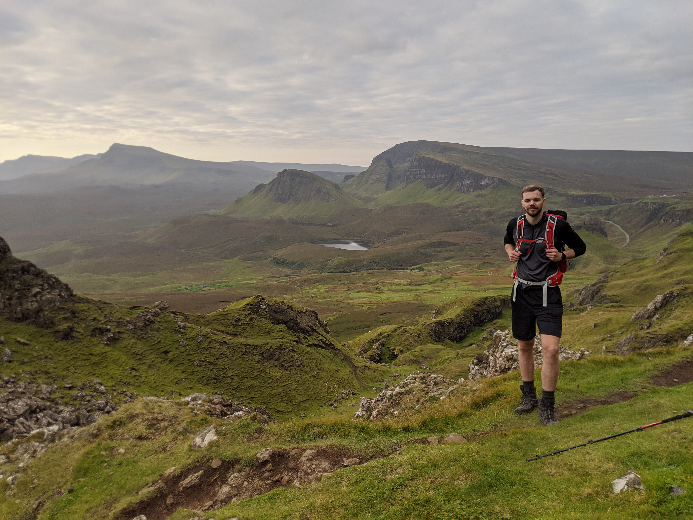

About Me
So, my name’s Josh.
.jpg)
I live in Wigan with my girlfriend Alex, my cat Greg and my dog Sally. I've created this page to try out some of the HTML, CSS and JavaScript skills which I've been learning through lockdown.
There's some more about me in the sections below or you can find me on the following social platforms.


My Hobbies
Walking
Why Walking?
I first started walking around 10 years ago when I completed Snowdon for the first time with two friends. For some reason in my mind I'd built Snowdon up to be a big hill. Since then I've found that taking a day out of my normally
busy routine to simply walk and catch up with friends is a great way to relax.
You can also make walking relatively competitive by trying to complete the National 3 Peaks challenge or even the Yorkshire 3 peaks.
My Favourite Walks
Everyone of the mountains I've climbed so far has been special in there own way but you can see my top 3 below.
Quiraing
We climbed Quiraing when we visited Skye for my 30th birthday in September 2020. We got up at the crack of dawn (literally) to avoid the crowds.
We only had a vague idea of route but the path was pretty easy to follow. It took around 4 hours to complete but it didn’t matter as there was so much to see. The picture really doesn't do it justice, it's an amazing
walk.
Fairfield Horseshoe
This is my favourite route in the lake district which I’ve hiked 5/6 times. It's around a 4 hour walk at a decent pace but you could easily spend a full day hiking the route just taking in the scenery.
I'd say this is the route which inspired my hiking obsession because the views are incredible. It's hard to believe this is only an hour and a half from Wigan!
The Newlands Horshoe
Another one of my favourites. I've only completed this route once but I can already say it’s one of the most enjoyable I've ever done.
The route is pretty challenging but fun and the views are something else. It's a long slog at around 12 miles but definitely worth it if you get the chance!
The Wainwrights
Wainwrights are the 214 English peaks (known locally as fells) described in Alfred Wainwright's seven-volume Pictorial Guide to the Lakeland Fells (1955–66). They all lie within the boundary of the Lake District National Park in Cumbria, and all but one (Castle Crag) are over 1,000 feet (304.8 m) in height. I'm aiming to get all 214 of these completed within the next 3 years. With a new baby on the way this may be a little more challenging than first though!
What've I climbed so far?
Hellvelyn
Old Man of Coniston
Birks
Arnission Crag
St. Sunday Crag
Fairfield
Hartstop above howe
Hart Crag
Dove Crag
Great Rig
Heron Pike
Low Pike
Nab Scar
Seat Sandal
Robinson
Hindscarth
Dale Head
High Spy
Maiden Moor
Catbells
Red Screes
Middle Dodd
Caudale Moor
Scafell Pike
Wansfell
Sour Howes
Sallows
My Job
I'm currently employed at AO in the role of a Business Analyst. Business analyst help guide businesses in improving processes, products, services and software through data analysis. These agile workers straddle the line between IT
and the business to help bridge the gap and improve efficiency.
Here are some of the skills that Business Analyst's use on a daily basis.

Contact Me
If you're interested in me helping out with one of your development projects, why not get in touch?